Business Official Account Platform
QQ Wallet | Busniess Official Platform is a toB platform for over 100 business partners to manage their official accounts for marketing campaigns on QQ, the most popular instant message platform among Generation Z. I worked as a UX Desiger on this platform in coordination with 3 different product managers, responsible for the upcoming launch of QQ Red Pocket Service, QQ Mini Program Platform and update of Statistic Services. My work has been hand off to UI designers and software engineers, entering the next development cycle.
The Business
Tencent Official Account
Official Accounts are medias set by content creators including corporate brands, media, government bodies, and celebrities to directly broadcast to and interacte with their followers. Official Accounts in Wechat and QQ have boosted more than 14% monthly active users since 2016. They also serves as one of the key drivers behind Tencent’s burgeoning advertising revenues.
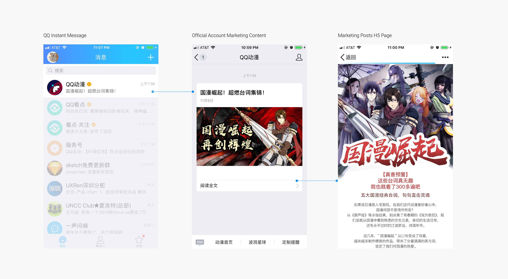
QQ Wallet | Business Official Account Platform
QQ Wallet | Business Official Account are platforms designed for our business partners to interacte with their followers from backend, managing their public posts as well as manage their followers
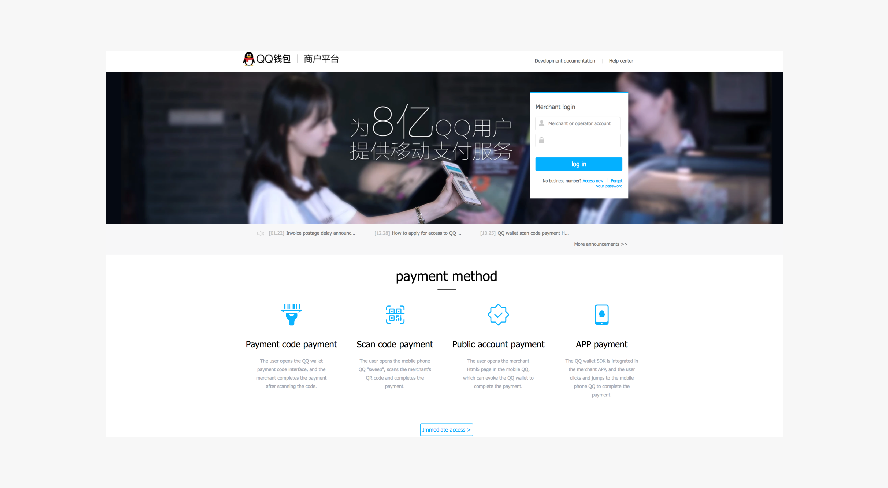
My Responsibility
Team Goal: Scale Up QQ Business Official Account Numbers
I set up a meeting with UX Design Lead, Design Director and Product Manager teams to discuss our business goal, timeline and human resources. Through this meeting, I quickly onboarding myself with several goals in minds.
My Final Deliveries
Key Module Style Guide
I updated new styleguide to imporve current user statisfaction rate before new services were launched. This reduced the time for software engineers to reconstruct the new services and produced a new ux baseline.
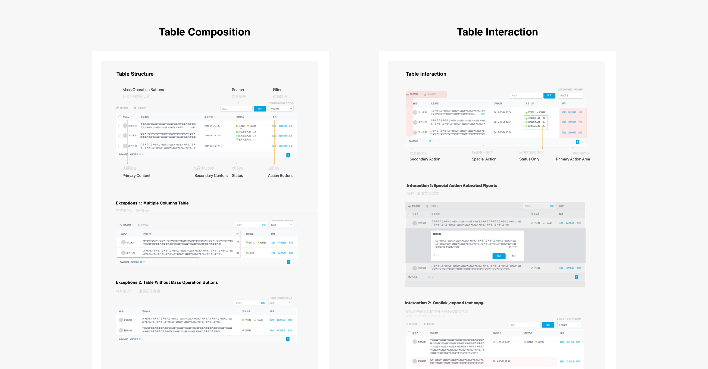
Red Envelope Service and Mini Program Service
I lead the design of Red Envelop and Mini Program Service in the Business Official Account platform, communicating with product managers and software engineers. These services are now launched onto the platform.

Reconstruct of Follower Statistic Interfacess
My research result gives the product manager a way to reflect what was already built, they took my advise of rebuilding the follower statistic interfaces while I later designed and delivered to the engineer teams.
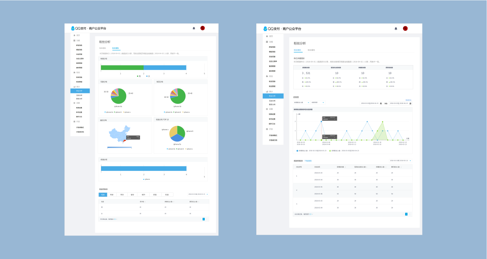
Business Achievements
Final Outcome
Rise in User Satisfaction Rate As confirmed by senior UX desingers in our team, the delievery can help a lot in fixing main UX breakdowns brought to the users.
200 New Mini Program Business Partner Invited According to Tencent News, the launch of mini program allows a success colloboration with over 200 new business partners.
Clear Responsibility between engineers. With new styleguide, the communication between backend software engineers and UI engineers becomes more smooth, the product manager team succesfful launch the product to.
Hightlight 1
How and Why I Redesign Table in a toB Platform
Reported by the product managers, users are complainting about inconsistancy over the platform. Meanwhile my team were preparing for new services the QQ Wallet | Business Official Account. The product manager decided to hand this work to me and improve user stastisfaction.
Research
Cognitive Walkthrough to Identify Key Breakdowns
To handle those negative comments in our platform, I set up a meeting with I set up a meeting with UX Design Lead, Design Director and Product Manager teams to discuss our business goal, timeline and human resources. Through this meeting, I decided to conduct a cognitive walkthrough to locate the key breakdowns in key flows.
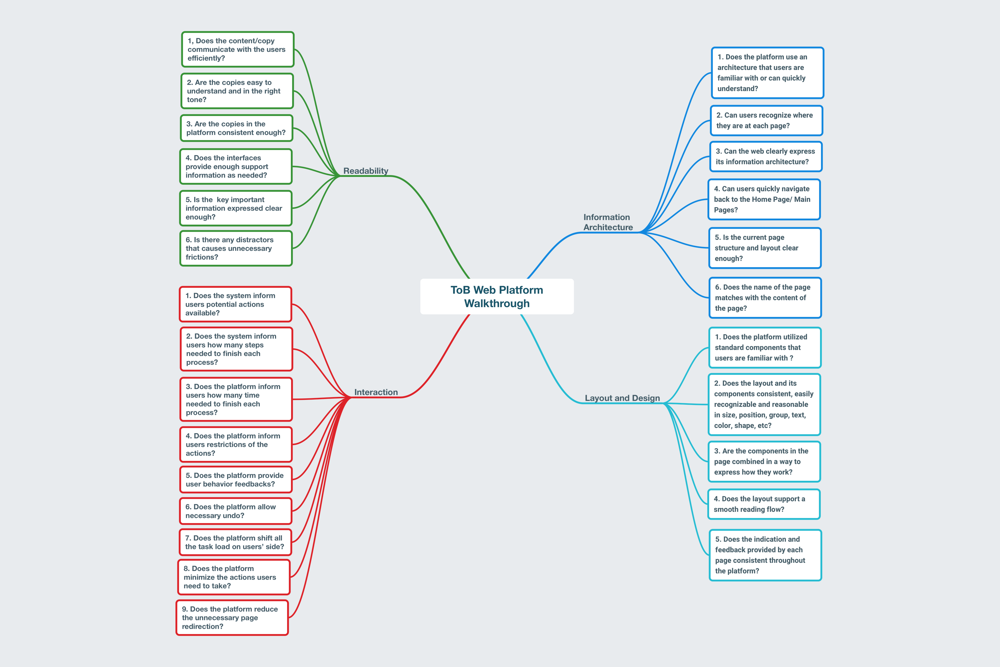
The Challenge
Achieve High ROI with Low Development Efforts
Communicating with the product managers, I identified that the development resources we could rely on is very limited. Only one UI engineer is available working on this project while he is filled with deadlines with higher priority work. How to reduce his work load to unsure a practicle outcome is my main problem.
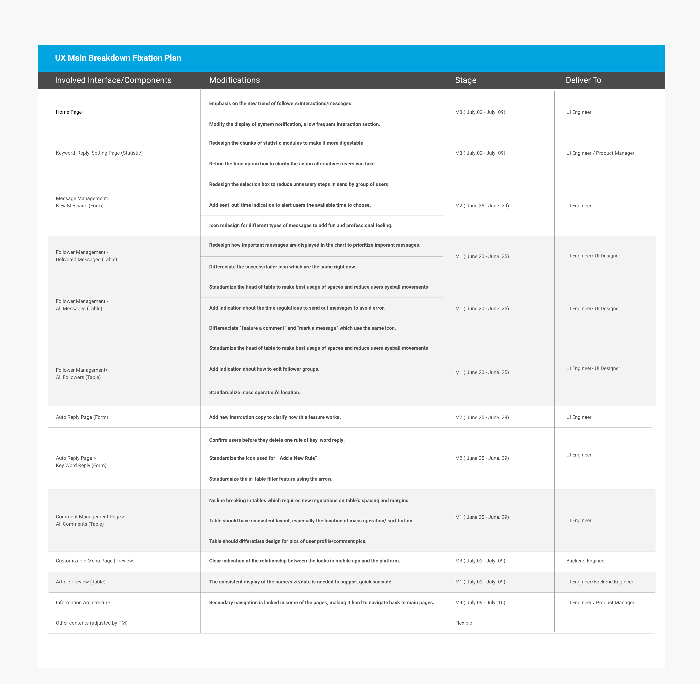
Comfirm with and Prove to the Product Mangers its Importance
While 9/14 pages contains problematic tables, to further validate my idea as well as discover new key breakdowns, I generated a first journey map communicating with my mentor and UX lead. I discovered that among the 9 pages, 2 of them are the most crucial page for a common user journey where users interact with them most frequently. Such frequency make the table refinement a first priority in fixing UX breakdowns.
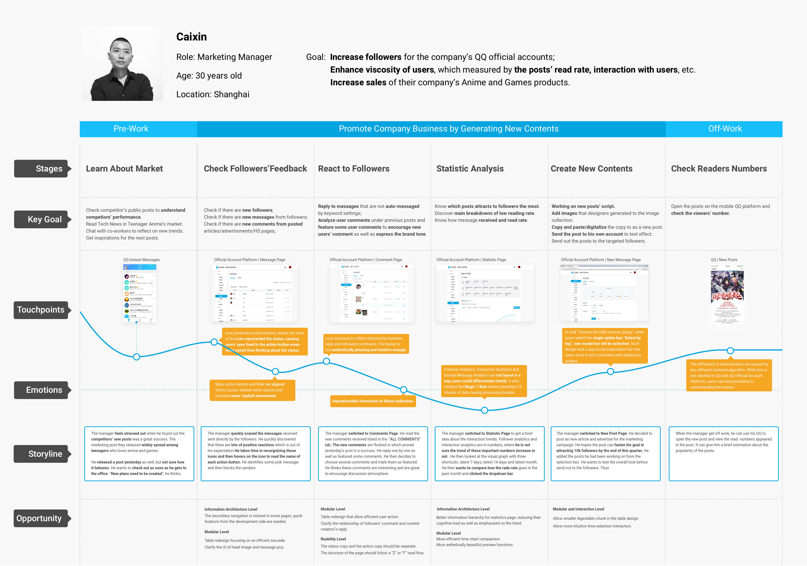
Research Findings
Abused Table Usage that Lacked Consistency
Among all the 14 pages that I identified as having usability issue, 9 pages has issue with its tables components. While tables are efficient in quick scanning, yet the current layout lacked a consistent regualtion in its presentation way.
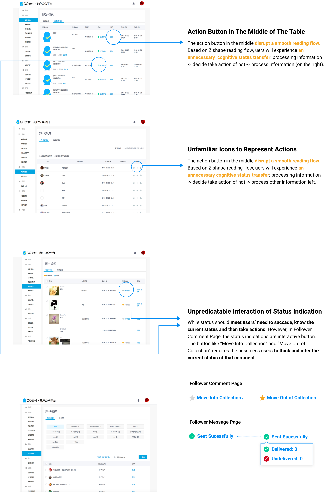
Design and Iteration
Design Goal: An Efficient and Aesthetic Table for Multiple Scenarios
I listed all the scenarios, components, interactions and aethetic issues of the current table. Through this, I discovered that although the current table styleguide follows a traditional table form, yet a lot of important interaction in the platform were neglected.
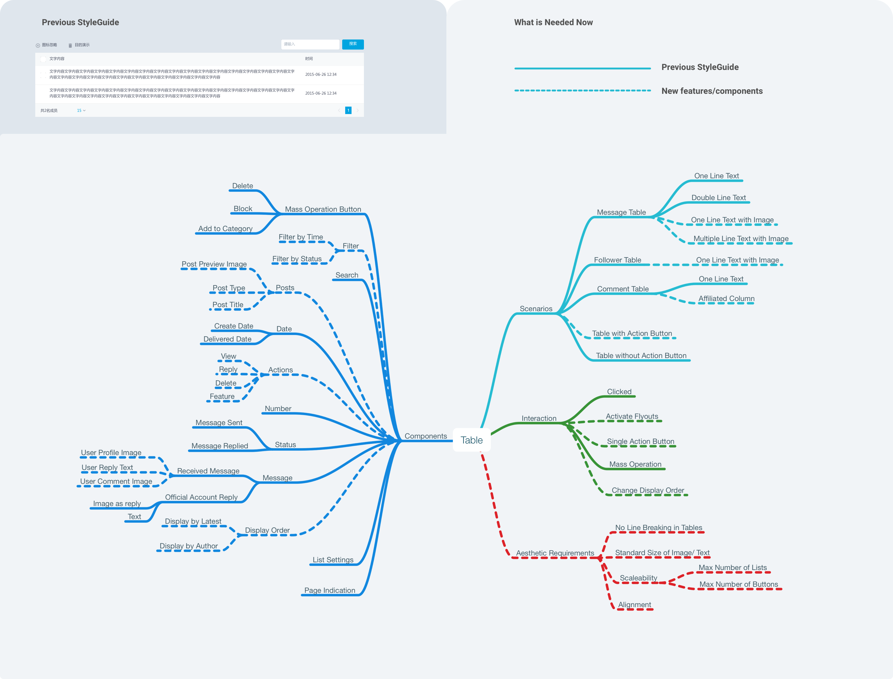
Project Delivery
Design to Reduce Harmful Reading and Action Friction
I made several iterations and discovered three main problems of current styleguide, they are then modified to be consistent with Tencent platform guidelines and reduce reading and action frictions.

My Reflection
Styleguide is a way to communicate keypoints with Software Engineers
My final deliveries are update of the system styleguide. Through this work, our team also achived an agreement that, while styleguide is often treated as a library for product UI, it is also a way to communicate key user behaviors with product managers. Select the most typical user behavior as the key module in styleguide can make sure these key actions will be proporly developed.
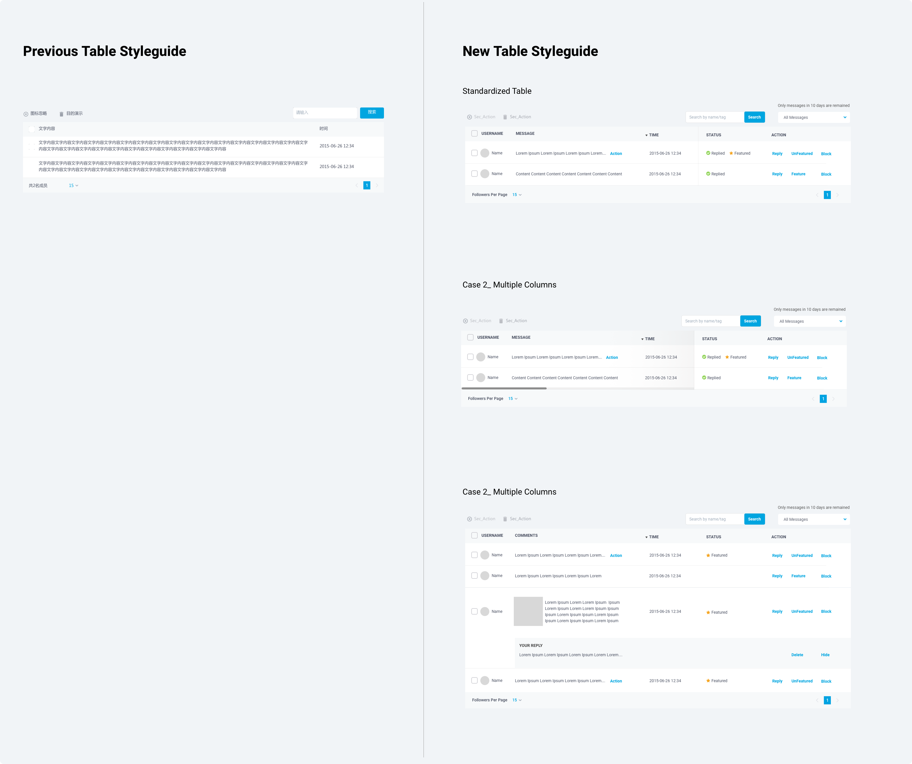
Hightlight 2
Strive For Efficient Solutions
My second project involves redesigning the Statistic Page of the platform. The product manager and I send two hour together, working on feature introduction as well as a first wireframe so that we can achieve on an agreement.
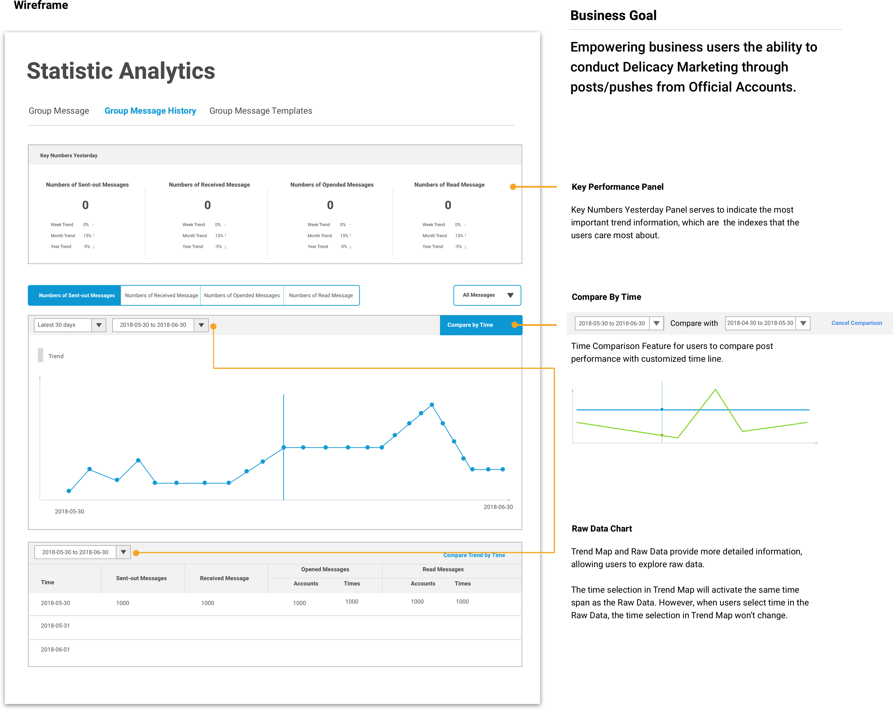
Usability Problems
Processing Duplicate Text in short time can cause overwhelming and tired feelings
When I started workking on the prototype, I discovered that there are a duplicate element in the interface that all requires the user to spend time in reading the four contents. Although the tab bar are more easier to access, it gaves the new users burden to digest info and waste of time for experienced users who were familiar with these four indexes.
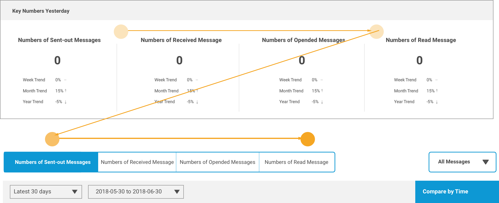
Divided options that requires frequent eyeball movement and working memory storage
The second usability problem that I realized is that, users have to make vast eye movements between option boxes to understand what the trend chart content is about. This can cause users extra time to process the current informaiton and decide where to make selection.
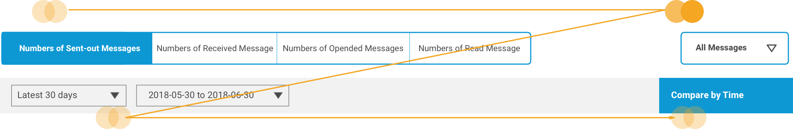
Neglection of Tracing Back Flow
The third problem that I discovered is that users will not be supported to easily identify the raw data, which are conflictin with Data Visuablization User Interaction Guidelines, zoom and overview. Thus, certain way to help users quickly navigate back to the raw data is important.

Design Justinfication
Shorten the distance of scan and mouse movement

Highlight Raw Data for Tracing Back Behaviors
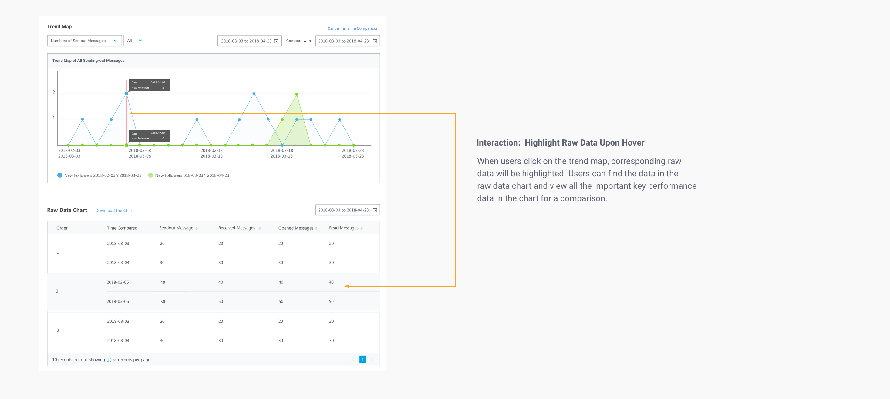
Shorten Reaction Time by Shorten Cognitive Processing Stages
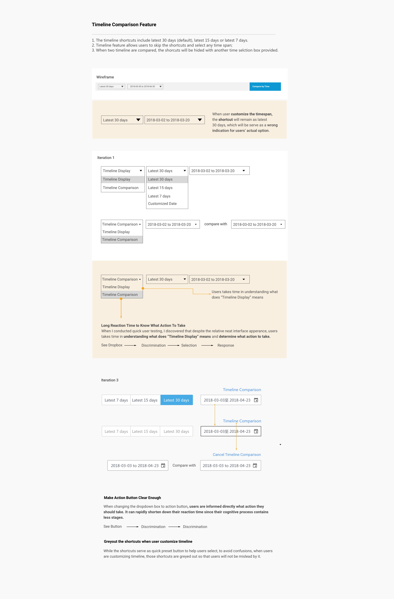
Final Delivery
Delivery to Product Manager
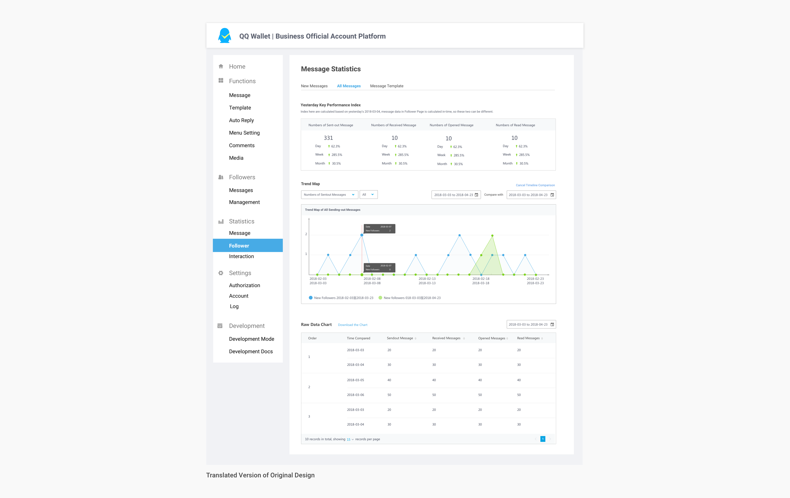
My Reflection
What I learned through the Internship
Communicate As Early As Possible To avoid misunderstanding and be clear what the "unspeaked" truth are, I gradually learned to communicate as early as possible with my product managers and my design teams. Also, techniques like mark down all the questions to check with product managers can also help. Since Tencent is a fast-pacing company, making sure that everything is practical, reasonable and deliverable are important to avoid future argument and time waste.
Pay attention to details For toB platforms, it is very important to strive for the most efficent solution to reduce extra time users need. I also leanred that when lacking access to the real users, secondary analysis can also help. Journey Map is a great tool for the team to understand what are important from the users perspective. Although it takes some time to map everything out, a fast version that can prioritize important user interaction is worthy.